VALORES
Son convicciones que definen nuestra conducta. Luchamos por hacerlos realidad en nuestro trabajo
cotidiano y construir una cultura organizacional basada en estos valores.

Integridad ética y profesional: Implica el compromiso de ser coherente y actuar en correspondencia con lo que enseñamos y predicamos.
Excelencia. Lograr un desempeño que vaya habitualmente más allá del cumplimiento rutinario del deber.
Autonomía. Independencia con respecto al Estado y a grupos de interés de cualquier tipo, sean estos religiosos, políticos o económicos.
Libertad y desarrollo del pensamiento crítico. Promovemos el debate constructivo, creativo y crítico de las ideas, así como la tolerancia de los que discrepan.
Respeto a los derechos de las personas. Construimos una comunidad donde estudiantes, docentes, y personal administrativo puedan ser valorados y respetados sin diferencias basadas en creencias políticas, sociales, étnicas, de género, de cultura o religión.
Responsabilidad social y ambiental: La UAM practica y fomenta en sus estudiantes la responsabilidad social y ambiental.